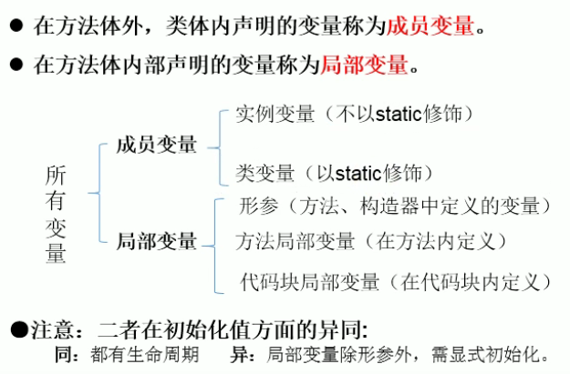

關鍵字static
- 意義:靜態的，類中共用的，生命週期跟隨類的
- 使用對象:屬性、方法、內部類、代碼塊，以下分別說明
使用static修飾屬性
-
稱為"靜態變量"或"類變量"
-
先複習關於變量的知識

- 實例變量是每個造出來的物件各自有的，比如:大明跟小明各自的age不同
- 類變量是整個類共用的，比如:大明跟小明的nation都是TW
- 類變量隨著類的加載而加載，可以通過"類.靜態變量"進行調用
- 物件沒創建之前類變量就已經存在
- 由於類只會加載一次，靜態變量在記憶體中也只存在一份，位於方法區的靜態域
- 在哪應用靜態屬性:
- 類中共用的，生命週期跟隨類的
- 舉例:構造器中自動生成編號的基數(比如從1001開始、1002..)
- 常量也常聲明為
static，再加上final修飾- 舉例:
Math.PI
- 舉例:
- 類中共用的，生命週期跟隨類的
使用static修飾方法
- 稱為靜態方法，規則大致與上面相同
- 隨著類的加載而加載，可以通過"類.靜態方法"進行調用
- 不能在靜態方法中調用非靜態的屬性或方法(畢竟沒有物件)
- 在靜態方法中，不能使用
this或super關鍵字(物件都沒出生當然不能用) - 在哪應用靜態方法:
- 操作靜態屬性的方法，通常設為靜態
- 工具類的方法，比如
Math、Array、Collections
單例(singleton)設計模式
-
定義:整個系統中，強制某個類只存在一個實例，減少資源消耗
-
應用場合:
- 網站的計數器，只造一個，不然難以同步
- 日誌:通常是一個日誌文件一直被開著，最好只有一個實例去操作它
- 資料庫的連接池
- Windows的Task Manager跟Recycle Bin也是很典型的單例
-
“餓漢式"實現:
-
私有化的構造器
-
內部創建類靜態的實例 (一上來就造好，只給你訪問這個)
-
提供外部的靜態方法，返回類的實例
-
優劣:加載時間長，但線程安全
-
舉例:
class Bank { private Bank() { } private static Bank instance = new Bank(); public static Bank getInstance() { return instance; } }
-
-
“懶漢式"實現:
-
私有化的構造器
-
聲明類的靜態實例，但不初始化(沒用到就不造所以稱為懶)
-
聲明外部的、靜態的返回當前類實例的方法
-
優劣:延遲創建，但線程不安全，需要加鎖
-
舉例:
class Order { private Order() { } private static Order instance = null; // synchronized=上同步鎖 public synchronized static Order getInstance() { if (instance == null) { instance = new Order(); } return instance; } }
-
關鍵字main
public static void main(String[] args) {}
- 其實就是一個靜態的方法，作為入口，生命週期是跟隨類本身
- 以往寫的東西老是造對象然後透過實例調用，其實也可以透過static修飾然後直接"類.屬性或方法"來調用
- 形參(
String[] args)，其實就是命令行，可以跟控制台互動在調用的時候加入一些參數
代碼塊
類似go中的init，初始化時執行的區塊
-
定義:在類中用大括弧
{}包裹的區塊 -
修飾:只能考慮使用
static -
區別:
-
static靜態初始化塊:隨著類的加載而執行，而且只執行一次，通常用來初始化類的信息 -
非靜態初始化塊:隨著實體物件的創立而執行，在創立物件時，將物件的屬性進行初始化
-
-
可以存在多個，執行順序按上下決定，但不建議這樣做
-
若創立一個物件，代碼塊的執行先於構造器
- 由父及子，靜態先行
關鍵字final
-
意義:最終的
-
使用對象:類、方法、變量，以下分別說明
-
用
final修飾類:此類不能被繼承(絕子絕孫)，例如String類、System類、StringBuffer類 -
用final修飾方法:此方法不能被重寫，例如Object類中的
getClass(); -
用final修飾成員變量:修飾實例變量時，此時的"變量"就是一個常變量，即每個物件的這個屬性可能不同，但出生時就定死了不會再改(舉例:每個人的生日)，可以考慮的位置有:
- 顯式初始化
- 代碼塊中初始化
- 構造器中初始化
-
static final用來修飾類的屬性(類變量):全局常量，整個類都會用到，加載類的時候就定死不會改的東西，用於:比如物理常數 -
用
final修飾局部變量:修飾局部變量時，類似const，就是一個不能再改的常量，用於:比如想定死一個形參的變量值、寫到一個方法中用到的某變量不想它被改變
-
小結
static修飾的屬性:生命週期跟隨類、隨著類加載一次，存在方法區的靜態域- 單例模式:希望整個類只有一個實例達省資源，把構造器私有化，接著分成餓漢模式:提前造一個，對外唯一
get方法調用它；懶漢模式:聲明靜態實例為null，要用時若null就造一個給你調用，否則就調生好那個給你用 - 代碼塊:起到一個
init的作用，執行優先於構造器 final:不想被繼承的類、不想被重寫的方法、不想被改的變量
上次修改於 2021-11-29